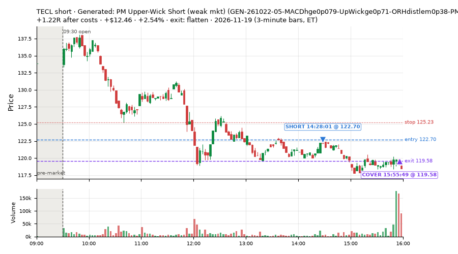
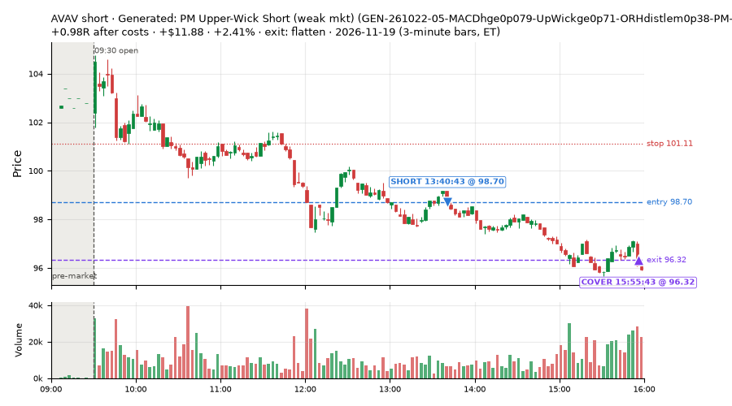
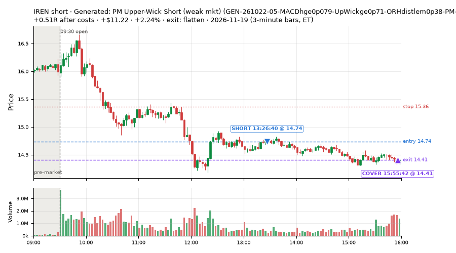
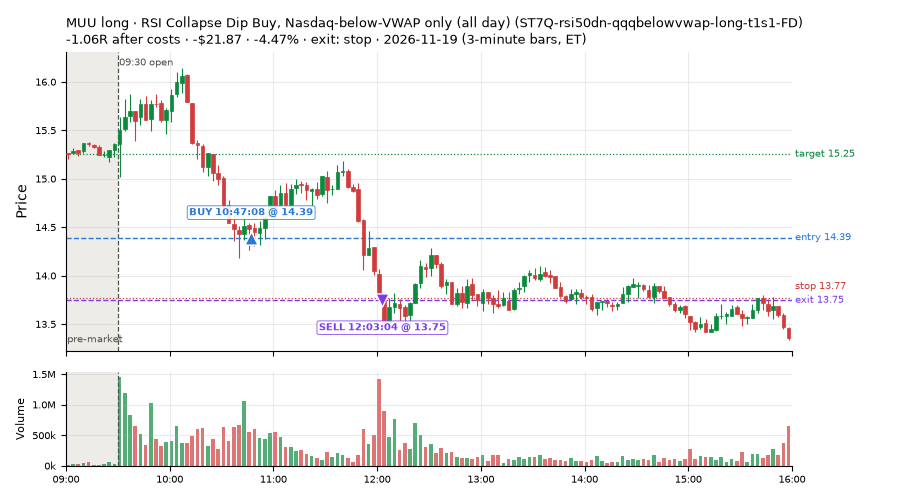
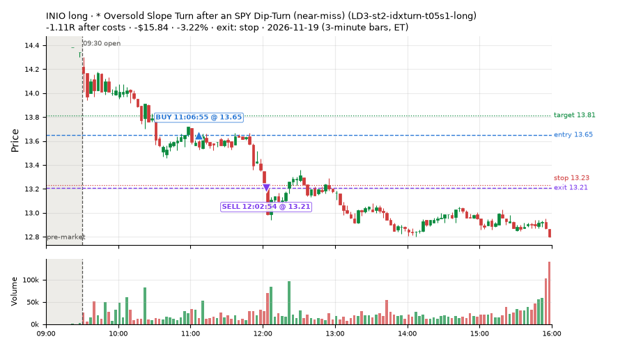
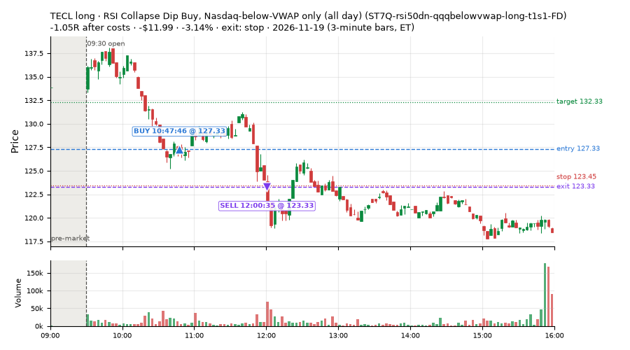
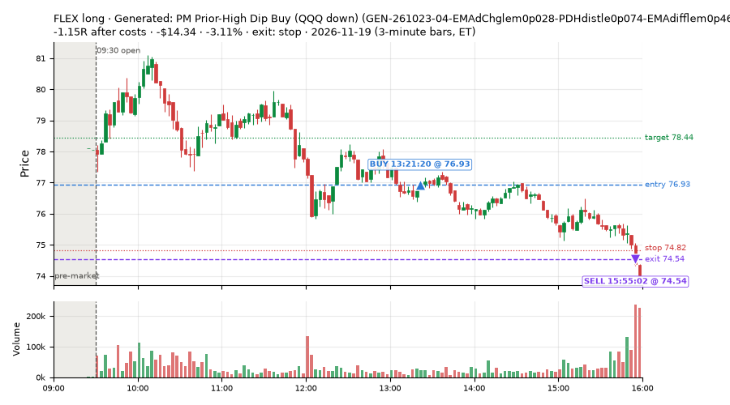
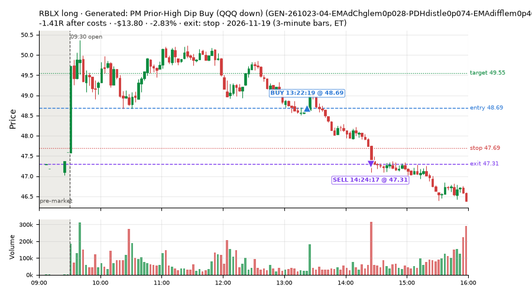

104 trades · win rate 42% · P/L $-184.23
PROBATION: no live setup has passed both locked test periods. 10 owner-directed setups added 2026-10-08 (MarcoFlow top 5 + 5 new), untested live. RW6G1 (RW6 + VWAP band guard) added 2026-10-09, probation.

| Symbol | Setup | Side | In | Out | Entry | Exit | Exit reason | % gained | P/L |
|---|---|---|---|---|---|---|---|---|---|
| TECL | Generated: PM Upper-Wick Short (weak mkt) (GEN-261022-05-MACDhge0p079-UpWickge0p71-ORHdistlem0p38-PM-BRoplt0p35-holdtr-short) | short | 14:28 | 15:55 | 122.70 | 119.58 | flatten | +2.54% | $12.46 |
| AVAV | Generated: PM Upper-Wick Short (weak mkt) (GEN-261022-05-MACDhge0p079-UpWickge0p71-ORHdistlem0p38-PM-BRoplt0p35-holdtr-short) | short | 13:40 | 15:55 | 98.70 | 96.32 | flatten | +2.41% | $11.88 |
| IREN | Generated: PM Upper-Wick Short (weak mkt) (GEN-261022-05-MACDhge0p079-UpWickge0p71-ORHdistlem0p38-PM-BRoplt0p35-holdtr-short) | short | 13:26 | 15:55 | 14.74 | 14.41 | flatten | +2.24% | $11.22 |
| Symbol | Setup | Side | In | Out | Entry | Exit | Exit reason | % lost | P/L |
|---|---|---|---|---|---|---|---|---|---|
| MUU | ST7Q-rsi50dn-qqqbelowvwap-long-t1s1-FD | long | 10:47 | 12:03 | 14.39 | 13.75 | stop | -4.47% | $-21.87 |
| INIO | LD3-st2-idxturn-t05s1-long | long | 11:06 | 12:02 | 13.65 | 13.21 | stop | -3.22% | $-15.84 |
| TECL | ST7Q-rsi50dn-qqqbelowvwap-long-t1s1-FD | long | 10:47 | 12:00 | 127.33 | 123.33 | stop | -3.14% | $-11.99 |
| FLEX | GEN-261023-04-EMAdChglem0p028-PDHdistle0p074-EMAdifflem0p46-PM-QQQltm0p6-t1s1-long | long | 13:21 | 15:55 | 76.93 | 74.54 | stop | -3.11% | $-14.34 |
| RBLX | GEN-261023-04-EMAdChglem0p028-PDHdistle0p074-EMAdifflem0p46-PM-QQQltm0p6-t1s1-long | long | 13:22 | 14:24 | 48.69 | 47.31 | stop | -2.83% | $-13.80 |








Signal to fill: median 2s, 90th percentile 3s (104 trades). Bars close each minute; the order follows the bar close.
Best excursion (MFE): median 0.55R; worst (MAE) median 0.82R. 32% of trades never got +0.25R in our favour; 7 reached +1R and still closed at or below 0.
| Symbol | Setup | Best R | Worst R | Closed R |
|---|---|---|---|---|
| SWKS | ST4-emadn-long-am-t1s05-FD | +1.43 | -1.14 | -1.24 |
| FTEC | ST7Q-rsi50dn-qqqbelowvwap-long-t1s1-FD | +1.44 | -1.10 | -1.19 |
| SMH | ST7Q-rsi50dn-qqqbelowvwap-long-t1s1-FD | +1.49 | -1.11 | -1.12 |
| MUU | ST7Q-rsi50dn-qqqbelowvwap-long-t1s1-FD | +1.25 | -1.17 | -1.06 |
| FFIV | GEN-261029-02-RSI2le0-VWAPcrossesge9-DayRngVsPrevle0p52-MID-BRvwlt0p4-hold-long | +1.13 | -1.08 | -1.13 |
| Entry time | Trades | Win | Avg R | P/L |
|---|---|---|---|---|
| 09:50-10:30 | 2 | 100% | +1.09 | $16.32 |
| 10:30-11:30 | 13 | 8% | -0.94 | $-123.29 |
| 11:30-13:00 | 24 | 38% | -0.47 | $-28.67 |
| 13:00-14:00 | 46 | 39% | -0.32 | $-95.01 |
| 14:00-16:00 | 19 | 74% | +0.24 | $46.42 |
| Setup | Trades | Win | Avg R after costs | Adj R (net of SPY) | Avg R ex-market (all sessions) | P/L |
|---|---|---|---|---|---|---|
| Stretched Below VWAP Bounce (far) (CWT13-vwapstretch-z075-long) | 9.0 | 33% | -0.38 | -0.30 | -0.11 (beta +1.34, n 35) | $-34.49 |
| Generated: Midday Low Bounce Buy (MACD up) (GEN-261020-03-MACDhge0p079-BarsSinceLODle5-MID-BRvwlt0p3-t05s05-long) | 3.0 | 33% | -0.46 | +0.80 | -0.60 (beta +0.82, n 12) | $-9.43 |
| Generated: PM Upper-Wick Short (weak mkt) (GEN-261022-05-MACDhge0p079-UpWickge0p71-ORHdistlem0p38-PM-BRoplt0p35-holdtr-short) | 34.0 | 76% | +0.26 | +0.01 | -0.14 (beta -1.05, n 62) | $108.55 |
| Generated: PM Prior-High Dip Buy (QQQ down) (GEN-261023-04-EMAdChglem0p028-PDHdistle0p074-EMAdifflem0p46-PM-QQQltm0p6-t1s1-long) | 20.0 | 20% | -0.57 | -0.36 | -0.81 (beta -0.65, n 24) | $-110.39 |
| Generated: Lunch Failed-Breakdown Short (GEN-261027-08-ORBfailDn-FromPCATRlem0p96-LUNCH-QQQltm0p6-hold-short) | 10.0 | 20% | -0.80 | -2.45 | -0.23 (beta -0.28, n 47) | $-19.44 |
| Generated: Midday Choppy Oversold Buy (GEN-261029-02-RSI2le0-VWAPcrossesge9-DayRngVsPrevle0p52-MID-BRvwlt0p4-hold-long) | 13.0 | 31% | -0.51 | +0.73 | -0.49 (beta -0.04, n 33) | $-32.12 |
| * Oversold Slope Turn after an SPY Dip-Turn (near-miss) (LD3-st2-idxturn-t05s1-long) | 1.0 | 0% | -1.11 | -0.76 | -0.27 (beta +0.22, n 5) | $-15.84 |
| Early Sellers, Mid-High RSI (MF2-open-rsimidhi-flowsell) owner-directed; holdouts once: Sep-Oct -0.108R n41, Apr-Jun +0.046R n171 | 2.0 | 100% | +1.09 | +0.40 | -0.37 (beta -1.86, n 16) | $16.32 |
| Gap-Down VWAP Loss Short, Slope Filter (near-miss) (NM1-cwt09-g10-vwaploss-short) | 1.0 | 100% | +0.40 | +0.35 | +0.80 (beta +0.53, n 5) | $6.68 |
| EMA Cross-Down Dip Buy (all day) (ST4-emadn-long-am-t1s05-FD) | 3.0 | 0% | -1.15 | -0.98 | +0.16 (beta +2.71, n 21) | $-18.66 |
| RSI Collapse Dip Buy, Nasdaq-below-VWAP only (all day) (ST7Q-rsi50dn-qqqbelowvwap-long-t1s1-FD) | 7.0 | 0% | -1.09 | -0.47 | -0.25 (beta +0.84, n 17) | $-76.61 |
| Down-Stock Volume Spike Buy (all day) (ST8-volspikedn-long-pm-t1s1-FD) | 1.0 | 100% | +0.09 | +0.24 | +0.07 (beta +0.91, n 19) | $1.20 |
Market direction (SPY, beta 1) accounted for $-37.36 of today's $-184.23; the rest ($-146.87) came from the setups themselves. Avg R net of SPY: -0.27 (incl. a hedge leg's cost; report only).
24 setups live today. Today: 217 signals, 104 taken, 1 lost because another setup held the symbol (0%). Since 2026-11-05 (11 sessions): 1117 signals, 434 taken, 12 lost to other setups (1%). Peak open positions today 66 of 400 slots. Earnings blackout removed 209 symbols before scanning.
Simulated playing time (not live): 678 what-if trades of signals not taken, avg -0.07R, 49% winners; of them 12 lost to another setup (avg +0.15R).
Silent: GEN-261023-09-ORBfailDn-Ret15mge0p54-LATE-BRvwgt0p7-holdtr-short-WB4, GEN-261019-07-VolRatioge2-UpWickge0p59-DayRngVsPrevge1p5-LATE-SPYgt0p5-t05s1-long, GEN-261028-05-EMAdChgge0p093-ORLdistlem0p42-LAM-QQQgt0p6-holdtr-long, IDX2-spy075-0945-3x-trail, IDX5-spy050-0945-3x-trail, LD4-st4-breadthup-t1s05-long, LD8-spy-dip030-breadthturn-spxl-holdtr-long
| Prio | Setup | Today sig / taken | Sessions | Signals / taken / trades | Taken/day | Expected/day | Lost to other setups | Lost to (setup n) | Top skip reasons | SIMULATED: not-taken n / avg R / win | Verdict |
|---|---|---|---|---|---|---|---|---|---|---|---|
| 1 | Late-Day ETF Dip Buy — WB1: dip inside an up-hour NM-ETF-late-dip-di-long-WB1 | 0 / 0 | 3 | 1 / 1 / 1 | 0.33 | – | 0 | – | – | 0 / – | slow 1.7 entries/week; ~36 weeks to 60 trades |
| 2 | Gap-Down Rebound Overbought Short (all day) — WB4: no thin-R names, RSI(5) ≤ 90, slope ≤ 1.0 L3-gap-slope-rsi5hi-FD-WB4 | 5 / 0 | 3 | 24 / 3 / 3 | 1.00 | – | 0 | – | not shortable / shorts off 19, spread / quote / size 2 | 20 / +0.28R / 80% | slow 5.0 entries/week; ~12 weeks to 60 trades |
| 3 | Generated: Late Failed-Breakdown Pop Short — WB4: 14:30-15:00, pop >= 0.20 ATR, ADX(7) >= 44 GEN-261023-09-ORBfailDn-Ret15mge0p54-LATE-BRvwgt0p7-holdtr-short-WB4 | 0 / 0 | 3 | 0 / 0 / 0 | 0.00 | – | 0 | – | – | 0 / – | silent no signals in 3 session(s); no expected rate on file |
| 4 | Index Dip Bounce 1 TQQQ (hold) IDX1-qqq100-0955-TQQQ-hold | 0 / 0 | 11 | 1 / 1 / 1 | 0.09 | – | 0 | – | – | 0 / – | slow 0.5 entries/week; ~132 weeks to 60 trades |
| 5 | * Oversold Slope Turn after an SPY Dip-Turn (near-miss) LD3-st2-idxturn-t05s1-long | 2 / 1 | 11 | 7 / 5 / 5 | 0.45 | – | 0 | – | spread / quote / size 1, other 1 | 2 / -0.32R / 50% | slow 2.3 entries/week; ~26 weeks to 60 trades |
| 6 | * Oversold Pop with Breadth Turning Up (near-miss) LD1-ns1-breadthup-t05s1-long | 0 / 0 | 11 | 7 / 5 / 5 | 0.45 | – | 0 | – | spread / quote / size 1, price through stop/target 1 | 2 / -0.30R / 50% | slow 2.3 entries/week; ~26 weeks to 60 trades |
| 7 | Generated: Midday Low Bounce Buy (MACD up) GEN-261020-03-MACDhge0p079-BarsSinceLODle5-MID-BRvwlt0p3-t05s05-long | 46 / 3 | 4 | 118 / 12 / 12 | 3.00 | – | 0 | – | spread / quote / size 63, other 41, price through stop/target 2 | 102 / -0.40R / 40% | ok 15.0 entries/week |
| 8 | Backside Lower-High Short CWT04-backside-lh-a15-short | 1 / 0 | 11 | 5 / 0 / 0 | 0.00 | – | 0 | – | not shortable / shorts off 5 | 5 / +0.20R / 40% | slow no entries yet |
| 9 | Generated: Late Volume Spike Buy (wide day) GEN-261019-07-VolRatioge2-UpWickge0p59-DayRngVsPrevge1p5-LATE-SPYgt0p5-t05s1-long | 0 / 0 | 4 | 0 / 0 / 0 | 0.00 | – | 0 | – | – | 0 / – | silent no signals in 4 session(s); no expected rate on file |
| 10 | Generated: Lunch Failed-Breakdown Short GEN-261027-08-ORBfailDn-FromPCATRlem0p96-LUNCH-QQQltm0p6-hold-short | 14 / 10 | 4 | 62 / 47 / 47 | 11.75 | – | 0 | – | other 8, spread / quote / size 5, not shortable / shorts off 2 | 15 / +0.02R / 47% | ok 58.8 entries/week |
| 11 | Generated: PM Upper-Wick Short (weak mkt) GEN-261022-05-MACDhge0p079-UpWickge0p71-ORHdistlem0p38-PM-BRoplt0p35-holdtr-short | 54 / 34 | 4 | 101 / 62 / 62 | 15.50 | – | 8 | GEN-261028-08-Ret5mge0p21-SMA20dlem0p16-Compress6le0p11-LUNCH-BRoplt0p35-holdtr-long 6, ST4-emadn-long-am-t1s05-FD 1, GEN-261023-04-EMAdChglem0p028-PDHdistle0p074-EMAdifflem0p46-PM-QQQltm0p6-t1s1-long 1 | other 12, spread / quote / size 10, not shortable / shorts off 9 | 39 / +0.18R / 64% | ok 77.5 entries/week |
| 12 | Gap-Down VWAP Loss Short, Slope Filter (near-miss) NM1-cwt09-g10-vwaploss-short | 2 / 1 | 11 | 81 / 5 / 5 | 0.45 | – | 0 | – | not shortable / shorts off 70, other 4, spread / quote / size 2 | 76 / -0.02R / 54% | slow 2.3 entries/week; ~26 weeks to 60 trades |
| 13 | Generated: Late-AM Below-Range Turn Buy GEN-261028-05-EMAdChgge0p093-ORLdistlem0p42-LAM-QQQgt0p6-holdtr-long | 0 / 0 | 4 | 0 / 0 / 0 | 0.00 | – | 0 | – | – | 0 / – | silent no signals in 4 session(s); no expected rate on file |
| 14 | Generated: PM Prior-High Dip Buy (QQQ down) GEN-261023-04-EMAdChglem0p028-PDHdistle0p074-EMAdifflem0p46-PM-QQQltm0p6-t1s1-long | 30 / 20 | 4 | 42 / 24 / 24 | 6.00 | – | 0 | – | spread / quote / size 9, other 9 | 18 / -0.49R / 39% | ok 30.0 entries/week |
| 15 | NS2 Up-3 Short, QQQ Up, Slope Down (near-miss) NM-RWR4-ns2-up3-qqqup-slopedn-short | 0 / 0 | 11 | 46 / 27 / 27 | 2.45 | – | 0 | – | spread / quote / size 13, not shortable / shorts off 4, other 2 | 19 / +0.17R / 84% | slow 12.3 entries/week; ~5 weeks to 60 trades |
| 16 | RSI Collapse Dip Buy, Nasdaq-below-VWAP only (all day) ST7Q-rsi50dn-qqqbelowvwap-long-t1s1-FD | 8 / 7 | 11 | 27 / 17 / 17 | 1.55 | – | 0 | – | spread / quote / size 8, other 2 | 10 / -0.39R / 30% | slow 7.7 entries/week; ~8 weeks to 60 trades |
| 17 | Early NS3 Short While SPY Up (near-miss) NM-RWN3-ns3-spyup-early-short | 0 / 0 | 11 | 24 / 8 / 8 | 0.73 | – | 0 | – | spread / quote / size 8, not shortable / shorts off 7, other 1 | 16 / +0.57R / 81% | slow 3.6 entries/week; ~16 weeks to 60 trades |
| 18 | Generated: PM Gap-Up Dip Buy (MACD falling) GEN-261029-03-MACDhlem0p12-Ret5mlem0p062-Gapge2-PM-QQQup-hold-long | 0 / 0 | 4 | 6 / 3 / 3 | 0.75 | – | 0 | – | other 2, spread / quote / size 1 | 3 / +0.36R / 67% | slow 3.8 entries/week; ~16 weeks to 60 trades |
| 19 | Early Sellers, Mid-High RSI MF2-open-rsimidhi-flowsell | 7 / 2 | 11 | 67 / 16 / 16 | 1.45 | 1.30 | 0 | – | per-setup cap 19, spread / quote / size 19, other 8 | 51 / -0.42R / 24% | slow 7.3 entries/week; ~8 weeks to 60 trades |
| 20 | Generated: Open RSI Surge Short (wide day) GEN-261026-08-RSIslopege19-Ret5mge0p063-DayRngVsPrevge1p2-OPEN-SPYup-holdtr-short | 0 / 0 | 4 | 28 / 13 / 13 | 3.25 | – | 0 | – | spread / quote / size 14, not shortable / shorts off 1 | 15 / +1.94R / 80% | ok 16.2 entries/week |
| 21 | Generated: Midday Choppy Oversold Buy GEN-261029-02-RSI2le0-VWAPcrossesge9-DayRngVsPrevle0p52-MID-BRvwlt0p4-hold-long | 20 / 13 | 4 | 45 / 33 / 33 | 8.25 | – | 0 | – | other 7, spread / quote / size 5 | 12 / -0.54R / 33% | ok 41.2 entries/week |
| 22 | Stretched Below VWAP Bounce (far) CWT13-vwapstretch-z075-long | 15 / 9 | 11 | 135 / 35 / 35 | 3.18 | – | 0 | – | per-setup cap 67, spread / quote / size 21, other 12 | 100 / -0.11R / 44% | ok 15.9 entries/week |
| 23 | Down-Stock Volume Spike Buy (all day) ST8-volspikedn-long-pm-t1s1-FD | 2 / 1 | 11 | 30 / 19 / 19 | 1.73 | 1.05 | 1 | MF2-open-rsimidhi-flowsell 1 | spread / quote / size 7, other 2, symbol held by another setup 1 | 11 / +0.01R / 73% | slow 8.6 entries/week; ~7 weeks to 60 trades |
| 24 | EMA Cross-Down Dip Buy (all day) ST4-emadn-long-am-t1s05-FD | 11 / 3 | 5 | 44 / 21 / 21 | 4.20 | 2.77 | 1 | GEN-261027-08-ORBfailDn-FromPCATRlem0p96-LUNCH-QQQltm0p6-hold-short 1 | spread / quote / size 12, other 10, symbol held by another setup 1 | 23 / +0.06R / 48% | ok 21.0 entries/week |
Every trade is attached as a CSV you can open and edit in Excel or Google Sheets. Live page: https://misiti15.github.io/MCF/live/